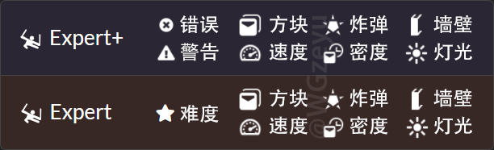
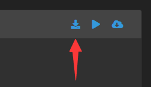

Beat Saber 新手教程 - PC平台
本教程仅适用于Steam等PC平台的最新正版BS；Quest请点此进入一体机教程 →
前言
当前页面只介绍PC平台（Steam、Rift平台）的新手基础操作，
Quest平台请点我进入一体机教程；遇到问题请点我查看PC问题解答。
如果你还没有购买游戏，请点我进入BeatSaber游戏购买教程。
Beat Saber已正式官方支持自定义歌曲，虽然不装Mod也能导歌，不过我们还是推荐安装Mod。
Mod能极大地丰富自定义歌曲功能，例如排序、排行、搜索、回放等，加载速度更快，还能下载歌曲。
虽然游戏更新会导致Mod失效，但其实只需要重新打开Mod安装器，一键安装，就都回来了。
这并非游戏开发商封杀Mod，更新游戏需要更改代码，有时会影响到一些Mod。
如果你按照B站视频教程操作遇到了问题，请完全重新按照本页的教程来操作，
我们强烈不建议按视频教程操作，很多信息都已过期，甚至可能根本就不完整，不正确。
本教程中出现的 BS 是 BeatSaber 的简称，PC 是 电脑 的简称。
降级
由于以下几种原因，目前推荐先降级再安装Mod：
·近期游戏更新了底层的Unity引擎，造成了一些问题，也不兼容旧的自定义模型
·官方提供了便捷的降级方式，一键降级1.29.1（旧Unity）且不会被自动更新
·游戏热度降低，部分Mod作者可能已经疲于频繁的游戏更新，还没有适配新版游戏
·最新版游戏的Mod数量还比较少，常用的Mod都还不全，而1.29.1版本的Mod非常丰富
·1.29.1与最新版游戏之间差不多，除了Unity版本不同，没有什么明显的变化
如果你不是很想降级，那么你可以忽略这个步骤，只不过Mod可能会少一些。
降级教程：
0. 关闭ModAssistant
1. 在Steam中找到Beat Saber
2. 右键 > 属性 > 测试版
3. 点击“参与测试”右侧的 无，将其切换至legacy1.29.1_unity_ver2019.4.28f1……
4. 等待下载完成，即可完成降级
Pico串流助手与旧版游戏存在冲突，降级后出现手柄问题请 点我打开手柄解决方法 即可完全解决。
Pico串流助手与Mod还可能有冲突，若出现断连或卡死可以 点我打开问题解答 试试，也许能解决。
请勿填写测试代码，也不要点击 检查代码，这不是测试版，只是利用该功能来提供旧版本游戏。
一键安装Mod
ModAssistant
目前唯一推荐的Mod安装器，具有很完善的Mod相关功能，还可以用于支持OneClick一键添加资源功能。
ModAssistant（增强版）
目前ModAssistant有两个不同版本，下方只提供推荐的增强版，如需下载不推荐的原版请点我。
增强版为中文Mod列表、默认国际源、可切换国内源；而原版为英文Mod列表、只能使用国际下载源。
工具文件夹）
若提示 通常不会下载ModAssistant...，请点击：右侧的三个点 → 保留 → 显示详细信息 → 仍然保留
若提示 Windows已保护你的电脑，请点击：更多信息 → 仍要运行
上方提供的多个下载按钮均为相同内容，互为备份，随便选一个就行，要是这都能卡住你那就别整了。
Pico玩家需注意，Pico串流助手与Mod可能有冲突，要是出问题可以试试 问题解答(点我打开) 的方法
首先，你需要确保在最后一次安装或更新游戏之后，至少运行过一次游戏，退出后才能安装Mod。
直接双击打开软件即可使用，无需放入游戏目录。
仔细阅读简介内容，同意后在左侧切换到Mod选项，勾选Mod后点击右下角的安装或更新，即可一键完成安装。
必须要点击右下角的 安装或更新 按钮才能完成Mod安装，不点击则不会进行任何操作！
安装后在下次运行游戏时Mod将会添加至游戏目录，至此才算完成Mod安装流程，在此之前会暂存在IPA目录。
如果你打算在这之后手动安装其他Mod，需要确保上次用完ModAssistant以后至少启动过一次游戏，退出游戏以后才能手动安装。
ModAssistant只包含作者正式发布并审核通过的Mod，对于测试版或其他未正式发布Mod，请手动安装该Mod。
ModAssistant会自动检测游戏版本，请不要手动将其切换为不兼容的游戏版本，否则会破坏你的游戏！
如果ModAssistant提示你让你检查左下角游戏版本是否正确，请必须先检查确保没问题才能安装Mod！
游戏的地板脚印上会显示版本号，必须确保这个版本号与左下角选择的游戏版本相同，否则会把游戏弄坏！
Pico玩家需注意，Pico串流助手与Mod可能有冲突，要是出问题可以试试 问题解答(点我打开) 的方法
不推荐将 选项 中的下载源切换为 包子源，推荐使用 国内源 或 国际源，包子源有时会出问题。
如果在安装Mod过程中遇到问题，请点我查看Mod问题解答，还是解决不了可在右上角加群提问。
如果你安装了360等第三方杀软，推荐先将其更换为系统自带杀软（Windows Defender）再装Mod。
360这类三方杀软容易无提示误拦截导致全部或部分Mod不生效，而系统自带杀软就没问题，查杀率还更高
检查是否成功
进入歌曲界面、选中自定义歌曲分类（图中黄框），与图片对比即可得知默认勾选的基础Mod是否成功生效，
没生效也不要着急，图片下方就有解决方法链接。
如果你装不上任何Mod，请点我进入Mod问题解答，里面有解决方案。（注：歌曲数量与Mod无关）
将语言改为中文
实现方式
社区翻译|SiraLocalizer这个Mod可以将社区翻译添加至游戏中，为游戏提供更多语言选项。
它现在没有上架ModAssistant，所以你需要从下方网盘中下载这个Mod，
然后按照手动安装Mod教程来操作，即可完成安装。
BeatSaber游戏资源共享
依次进入Mod相关文件 → 【Steam与Rift平台】你的游戏版本文件夹即可下载该Mod。
游戏版本可以在游戏菜单界面地板上的脚印内看到。
下载后，点我进入手动安装Mod教程，跟着该教程操作即可完成安装。
请务必按照本页 手动安装Mod教程 来操作，否则缺失步骤将不生效，和没装一样
如果你确认操作无误但就是不能成功汉化、没有中文选项，请在右上角加群反馈给WGzeyu
设置方法
最新版SiraLocalizer可以在首次启动时自动检测并切换为系统语言，
如果因为某些原因没有自动切换，可以在以下位置找到该选项：
如果你的浏览器不支持自动加载该动图，请点我重新加载。
选择 简体中文 点击 OK 后，如果游戏还是英文、选项跳回 English，请以正常方式退出再打开游戏
找到游戏目录
Steam

Rift
添加自定义歌曲（单曲）
下载歌曲
Beat Saber是一个挥砍音符的音乐游戏，要有人为歌曲摆放音符你才有东西砍，这一步骤被称为“作谱”，完整能玩的歌曲也被称为“谱面”，这也就是说游戏识别不了.mp3这类纯音频文件，因为不含谱面，你需要从教程给出渠道来下歌才能添加至游戏。如果喜欢的歌没谱，可以自己作谱 (右上角有群)，或使用AI生成 (太差不推荐, 点我进入)
BeatSaver
目前最大的BeatSaber自定义歌曲(谱面)下载网站，也是各位谱师唯一的发布地址。
若源站下载过慢甚至无法下载，可以尝试国内中转。
进入BeatSaver，输入搜索内容或设置过滤方式以后，点击Search就可以找到歌曲，如果不打算搜索可以不填。

点开歌曲可以查看详细介绍、各难度详情以及排行榜，下面是各难度详情的图标翻译：

一键添加歌曲
在ModAssistant的选项界面中启用BeatSaver的一键添加后，重启浏览器，
从BeatSaver找到歌曲后点击One-Click图标即可一键添加歌曲到游戏中。
点击后会弹出OneClick窗口，可以在里面看到执行状态。
如果下载缓慢或下载失败，请尝试在ModAssistant界面左下方切换OneClick下载源。
通过ModAssistant注册OneClick以后，请不要对ModAssistant或其所在文件夹执行更名、挪动、删除等操作，这会导致注册失效；如果注册已失效，可打开ModAssistant取消勾选OneClick后重新勾选回去。
手动添加歌曲


在BeatSaver中点击Download图标即可下载，下载之后多选压缩包，右键解压每个压缩文件到单独的文件夹。
如果下载缓慢或下载失败，请尝试更换为国内中转再下载，上方有链接。
图中是多选压缩包时的选项，如果你只选中了一个压缩包，选项名将变成 解压到[压缩包名称]
随后，将解压出的文件夹放入游戏的自定义歌曲目录中即可完成添加。
自定义歌曲目录：Beat Saber\Beat Saber_Data\CustomLevels

游戏可能不会自动创建该文件夹，安装核心Mod之后再运行游戏，或者是使用其他方式添加歌曲，才会自动创建该目录。如果你不打算安装Mod，请手动创建该文件夹，建议从上方复制名称，确保名称路径正确
安装核心Mod后将不支持识别嵌套子文件夹，而若是不装Mod，歌曲加载又会超级慢，所以强烈不建议通过嵌套子文件夹形式来进行分类，如果你想要通过文件夹分类导入歌曲，请点我进入分类添加歌曲教程
游戏内下载歌曲（新）
使用ModAssistant安装更好的歌曲搜索|BetterSongSearch后，
从游戏主界面左侧Mod选项中进入BETTER SONG SEARCH即可下载歌曲。

如果下载歌曲非常缓慢或下载失败，你可以将下载地址切换为我提供的国内中转，操作步骤为：
MORE▼ > BETTERSONGSEARCH SETTINGS > Use Chinese BeatSaver Mirror > 打开开关 > OK, ENABLE
游戏内下载歌曲（旧）
使用ModAssistant安装过默认勾选的Mod后，从游戏主界面左侧Mod选项中进入MORE SONGS即可下载歌曲。
如果加载或者下载速度非常缓慢，可以尝试切换为国内版插件，从WGzeyu提供的国内中转下载。
从BS游戏资源共享的Mod目录中下载Mod后，按照手动安装Mod教程安装即可。
注意：加粗字体可点击；安装国内版之后再使用ModAssistant会覆盖为原版，可重新手动覆盖回去来解决
游戏内选项位置

如果某一首歌曲的 Play 按钮为灰色点不了，通常是缺失Mod导致的，点击右上角的问号可查看详情。
如果在添加歌曲过程中遇到问题，请点我查看歌曲问题解答，还是解决不了可在右上角加群提问。
添加自定义歌曲（合集曲包）
下载歌曲包


Beat Saber游戏资源共享
我们整理的大量BeatSaber歌曲包都保存在这里，下载曲包后解压至单独的文件夹即可添加。
（多选压缩包时的右键选项才有解压至单独文件夹，而单选时，这个选项叫做解压至[压缩包名]）
歌曲压缩包目录中下载）
Beat Saber曲包资源同步
曲包内容与上方的网盘相同，但这个渠道是通过P2P下载、不走服务器，还能自动更新歌曲文件。
只要保持ResilioSync运行，每天自动更新最新的曲包到游戏中（歌曲路径方案），无需重复操作添加！
BeatSpider
WGzeyu为了整理曲包制作的专业谱面整理、下载软件，拥有非常多的功能来处理歌曲包、歌曲列表。
GitHub下载 备用下载(国内) 备用下载(网盘) （备用下载在工具目录内）
添加曲包为单独歌单
在PC平台，有两种完全不同的方案可以将曲包以单独歌单形式添加至游戏中，以下是他们之间的区别：
歌曲路径方案：操作更简单，不同曲包的重复歌曲会重复占用空间，可通过ResilioSync实现自动更新曲包；
歌曲列表方案：操作稍复杂，不同曲包的重复歌曲不会重复占用空间，用我提供的列表可实现一键更新曲包。
如果你打算添加的曲包数量不是特别多，我推荐歌曲路径方案，否则，推荐歌曲列表方案。
如果你想实现自动/一键更新曲包，要注意：
歌曲路径方案：必须通过上方Beat Saber曲包资源同步中的ResilioSync渠道下载，才能实现自动更新；
歌曲列表方案：必须从网盘中下载我提供的歌曲列表才能实现一键更新，推荐从前两个网盘下载歌曲压缩包。
请不要同时使用两种方案添加同一曲包，只会白白浪费时间与硬盘空间。
添加曲包为单独歌单（歌曲路径方案）

Beat Saber 歌曲路径管理器 (Beat Saber Song Folder Manager)
WGzeyu使用易语言编写的歌曲路径管理工具，支持拖入添加、路径纠错、更换封面等诸多功能，使用简单。
GitHub下载(推荐) 备用下载(国内) 备用下载(网盘) （备用下载在工具目录内）
下载歌曲路径管理器之后直接运行即可使用，这个软件可以将游戏外的文件夹设置为自定义歌曲目录。
打开软件，将曲包解压出的文件夹拖入窗口内，然后点击保存列表，即可完成曲包添加。
无需复制文件！无需放到游戏的歌曲目录！保存列表后再打开游戏，将直接可以看到这些曲包！
游戏顶部显示 Loading x Additional Song folder 代表正在加载你添加的歌曲文件夹，请耐心等待；添加大量歌曲后的首次启动，加载就是会很慢，可能需要十多分钟，首次加载完成后再次加载速度就快了。
需要使用ModAssistant安装 SongCore 这个默认勾选的核心Mod，装好之后添加的曲包才能生效。
添加曲包为单独歌单（歌曲列表方案）
歌曲包就是歌曲文件本身，而歌曲列表只是记录了歌曲的一个歌单列表，在游戏中相当于一个索引的作用；
把歌曲全混在一起放进歌曲目录，然后再把列表放进列表目录，游戏就能靠歌曲列表来识别出独立的分类。
没有歌曲列表(歌单)一样能识别歌曲，只是不能实现以独立的分类歌单形式来显示不同的合集曲包，会混在一起。
首先，按照“手动添加歌曲列表”教程，将歌曲列表复制到歌曲列表目录。（支持嵌套子文件夹）
如果你只有曲包没有列表，请查看下方的歌曲列表教程，可以用 BS歌曲路径管理器 将曲包生成为列表
然后，按照“手动添加歌曲”教程，将所有歌曲移动至同一文件夹内，一起添加至歌曲目录。
（不支持嵌套子文件夹，若存在相同歌曲，跳过即可）
如果你只有列表没有曲包，请点我进入对应教程
至此，曲包添加完成。
后续如果想要更新该曲包，先点击列表顶部的标题，然后再点击右上角的同步按钮即可一键完成更新，新歌单以及歌曲文件都会一起下载，无需进行其他操作。
如果你想通过ResilioSync实现曲包同步更新，需要注意：
1. 首次下载曲包文件时，通过网盘或同步下载均可，之后请不要尝试通过ResilioSync同步更新歌曲文件；
2. 首次下载曲包文件时不推荐在游戏内下载，由于我的曲包太大，会下的很慢，还会消耗歌曲网站大量流量；
3. 下载歌曲列表时，请通过ResilioSync将列表下载到游戏的歌曲列表目录，（支持嵌套子文件夹）；
4. 必须要在ResilioSync的歌曲列表的首选项中，取消勾选在文件夹存档中存储已删除的文件；
5. 后续曲包更新后，可以在游戏内通过歌曲列表下载缺失歌曲，变动歌曲一般不多，所以不会下多久。
游戏内选项位置
如果某一首歌曲的 Play 按钮为灰色点不了，通常是缺失Mod导致的，点击右上角的问号可查看详情。
如果在添加歌曲过程中遇到问题，请点我查看歌曲问题解答，还是解决不了可在右上角加群提问。
添加自定义歌曲（歌曲列表）
下载歌曲列表
歌曲列表（Playlist）就如同字面意义，是一个.bplist格式的歌曲列表，内容只是记录了有哪些歌曲，不含歌曲文件本身，所以这些歌曲列表文件都非常小，便于分享。
大多数情况下BS歌单为.bplist格式，不过有时候也可能是.json格式，实际上内容都一样，只是后缀不同。
（注意：有很多其他文件也是.json格式，并不是说.json就一定是歌曲列表）
你可以在这些地方找到.bplist格式歌曲列表：
BeatSaver
歌曲下载站现已支持分享歌曲列表，里面有非常多的由玩家分享的歌曲列表。
进入页面BEASTSABER
这个网站有不少国外大佬精心整理的歌曲列表，每个列表内的歌曲数量较少。
进入页面BeatSaber游戏资源共享
里面有很多我们整理的歌曲列表，不过我更推荐直接下载曲包而不是列表，按“添加曲包为单独歌单”添加。
PC平台可以直接添加曲包文件夹为单独歌单，用不着添加歌曲列表，网盘里的列表通常是准备给Quest平台用。
歌曲列表目录，不是歌曲包BS歌曲路径管理器 (Beat Saber Song Folder Manager)
WGzeyu使用易语言编写的歌单工具，本来是用于PC端分类添加曲包，后来加入了导出歌单功能，
现在可以将歌曲包转换为歌曲列表，不过我更推荐点击保存列表，直接就能用，无需导出歌单添加。
工具目录内）
BeatSpider
WGzeyu为了整理曲包制作的专业谱面整理、下载软件，拥有非常多的功能来处理歌曲包、歌曲列表。
GitHub下载(推荐) 备用下载(国内) 备用下载(网盘) （备用下载在工具目录内）
Beatlist
一个歌曲列表编辑工具，虽然已经停止更新，不过依然可以使用。现在有大佬接手更新了。
工具目录内）
一键添加歌曲列表
在ModAssistant的选项界面中启用Playlist的一键添加后，重启浏览器，
从BEASTSABER找到歌曲列表后点击OneClick图标即可一键添加歌曲列表到游戏中。
ModAssistant会在添加歌曲列表之后，自动下载列表中的歌曲文件。
自动下载歌曲列表
打开ModAssistant，切换至选项页面，点击将歌曲列表添加到游戏并下载歌曲或将歌单下载进游戏（取决于版本，翻译文本不同）。
然后选择你的.bplist文件即可完成添加，ModAssistant会添加歌曲列表并自动下载歌曲。
手动添加歌曲列表
将歌曲列表的.bplist文件，放入歌曲列表目录即可完成添加：Beat Saber\Playlists
如果你有歌曲列表对应的歌曲包，将歌曲添加至游戏即可。
没有对应的歌曲包也没关系，进入游戏，选择对应的歌单，先点击顶部的歌单标题后，再点击DOWNLOAD就可以在游戏中下载缺失的歌曲文件。
注：下方的DELETE是删除歌曲列表的按钮，点击后可以删除整个歌曲列表。

游戏内选项位置
如果某一首歌曲的 Play 按钮为灰色点不了，通常是缺失Mod导致的，点击右上角的问号可查看详情。
如果在添加歌曲过程中遇到问题，请点我查看歌曲问题解答，还是解决不了可在右上角加群提问。
更换光剑、人物等模型
添加模型功能
很多玩家会把模型与Mod搞混，但实际上他俩是完全不同的东西。
模型是光剑/人物资源，但游戏并不支持读取你的资源；Mod是由代码组成的模块，为游戏添加了这些功能。
按照一键安装Mod或手动安装Mod教程来安装对应的Mod，即可为游戏添加更换对应模型的功能。
自定义光剑：Saber Factory（光剑工坊）
自定义场景：Custom Platforms
自定义人物：Custom Avatars
自定义方块：Custom Notes
比如你想添加自定义人物，那么你需要在安装人物Mod（自定义人物|CustomAvatars）以后，添加人物模型（.avatar格式）才可以进游戏选择人物，由于人物的特殊性，你还需要通过相机Mod（相机v2|Camera2）来设置第三人称视角，才能从电脑上看到这个人物。
我经常见到有玩家把模型与Mod弄混，加完模型不装Mod，游戏没有更换模型的功能，也就找不到选项。
甚至，还有人明明使用的是人物模型却安装了场景Mod，还跑来找我说按教程做了没用......
如果ModAssistant(一键安装)里面没有对应的Mod，请尝试手动安装该Mod。
如果你不安装对应的Mod，游戏里绝对不会有更换模型的功能，也就没有对应的选项，
你需要先 一键安装 或 手动安装 安装对应的Mod，才能找到更换相应模型的选项。（加粗部分可点击）
注意！游戏最新更新的1.29.4版本（2023/05/09）由于升级了Unity版本并改为了OpenXR，导致无法兼容以前的所有模型，目前来看得让之前的模型作者重新导出模型才可以兼容新版游戏，还不确定有没有什么别的方法，现在的模型Mod均未更新至1.29.4以上版本，等Mod社区决定解决方法后我再更新相应的教程。
如果你现在就想换模型，可以先将游戏降级至1.29.1；如果你的游戏版本不高于1.29.1，可忽略本公告
ModelSaber

ModelSaber
目前最大的PC平台BS模型资源下载网站，选择模型类型即可浏览与下载。
若源站下载过慢甚至无法下载，推荐尝试国内中转。
一键添加模型
在ModAssistant的选项界面中启用ModelSaber的一键添加后，重启浏览器，
从ModelSaber找到模型后点击Install即可一键添加模型到游戏中。
点击后会弹出OneClick窗口，可以在里面看到执行状态。
如果下载缓慢或下载失败，请尝试在ModAssistant界面左下方切换OneClick下载源。
手动添加模型

在ModelSaber中点击Download即可下载模型。
如果下载缓慢或下载失败，请尝试更换为国内中转再下载，上方有链接。
随后，将下载到的模型文件放到对应的模型目录即可完成添加。
自定义光剑：Beat Saber\CustomSabers，格式：.saber
自定义场景：Beat Saber\CustomPlatforms，格式：.plat
自定义人物：Beat Saber\CustomAvatars，格式：.avatar
自定义方块：Beat Saber\CustomNotes，格式：.bloq
如果找不到目录可以自己创建一个，确保名称和路径完全相同即可。
游戏内下载模型
使用ModAssistant安装模型下载器|ModelDownloader之后，从游戏主界面左侧Mod选项中进入MORE MODEL即可下载模型。
切换模型选项位置
自定义光剑：SABERFACTORY（光剑工坊）
自定义场景：CUSTOM PLATFORMS
自定义人物：AVATARS
自定义方块：CUSTOM NOTES
如果在添加模型过程中遇到问题，请点我查看模型问题解答，还是解决不了可在右上角加群提问。
你需要先 一键安装 或 手动安装 安装对应的Mod，才能找到更换相应模型的选项。（加粗部分可点击）
如果ModAssistant(一键安装)里面没有对应的Mod，请尝试手动安装该Mod。
手动安装Mod
通常我们还是建议使用ModAssistant来安装Mod。
只不过，一些时候，如果Mod进行了大改，又或者是一个全新推出的Mod，一段时间内很可能只会以测试版发布，由于不够稳定，所以不能上架ModAssistant。
而这个时候，就需要手动下载并安装测试版Mod。其实，操作起来并不复杂。
测试版Mod可能会存在BUG，导致游戏出错或降低性能，如果遇到奇怪问题请先尝试移除测试版Mod。
下载Mod
BSMG Discord
国际社区的官方群组，作者首选的发布地址，可以在其中的#pc-mods分类下载测试版Mod，英文，需科学上网。
如果没梯子，请尝试通过其他地址下载，例如下方的BS资源主站或资源网盘
BeatSaber游戏资源共享
我会不定期将常用测试版Mod搬运上去，从各个渠道收集，其中包含一些未在BSMG中发布的Mod。
进入Mod相关文件文件夹即可下载测试版Mod，游戏菜单界面的地板脚印内可看到版本。
安装Mod
首先，使用ModAssistant点击安装或更新，一键装上它默认勾选的核心Mod，其他Mod均依赖这些Mod才能运行。（并不是使用ModAssistant安装你下载的Mod，而是直接安装它默认勾选的那些，先把基础打上）
如果你不打基础，手动安装的Mod一定会无法运行，所有Mod都依赖它默认勾选的那些核心Mod！
只有在安装的基础Mod正确生效以后，手动安装的Mod才能正常运行，点我查看如何检查是否生效。
如果你下载到的Mod是一个压缩包，请先将其解压至单独文件夹，并进入解压出的文件夹。
如果你的游戏还在运行，请先退出游戏。
如果下载到的/解压出来的只有.dll文件，
将其放置到：Beat Saber\Plugins，也就是游戏目录下的Plugins文件夹中。
如果下载到的/解压出来的是多个文件夹，或者是有与游戏中名称相同的文件夹，全选之后
将其放置到：Beat Saber，也就是游戏根目录中。
如果出现替换提示请选择替换，没出现也很正常。
请仔细核对文件路径不要放错，放错位置也将导致Mod一定会无法运行。
如果你打开了 Beat Saber\Beat Saber_Data 或者它的子目录，那你就进错文件夹了！
至此安装完成。如果安装的Mod未生效，请检查文件放置路径以及版本是否正确，依赖Mod是否已安装。
如果仍然不会安装，请点我查看动图。
其他平台教程
点我进入Quest一体机教程
当前页面仅介绍Steam等PC平台的操作，如果你在使用Quest一体机平台，请点我进入Quest一体机教程。
关于
此页仅介绍新手基础操作，遇到问题请点我查看问题解答，解决不了可在右上角加群提问。
WGzeyu 版权所有 教程内容采用CC BY-NC-SA进行授权 页面样式模板MIT LICENSE
允许在醒目注明原作者及原链接并保持内容同步更新的前提下完整转载，如果做不到，请直接分享原链接。
感谢MicroBlock为该页面提供的一些前端制作